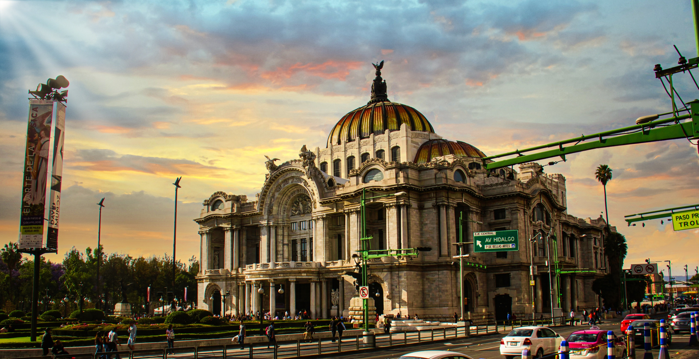

Mexico City is one of my favorite places to visit because there is always something new to do or discover. I really love the mix of food, culture, and the overall atmosphere of the city. As someone who works and studies, I feel like the city has avery motivating and energetic vibe all the time. The food is amazing, you can eat incredible street tacos or visit modern cafés and restaurants. I also enjoy traveling there because there are manytourist attractions, museums, and beautiful areas to explore with friends or even on your own.
